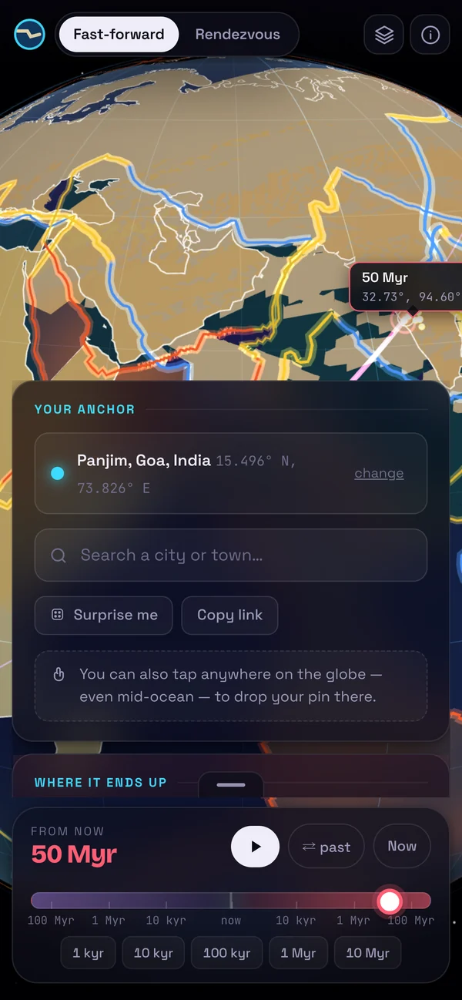
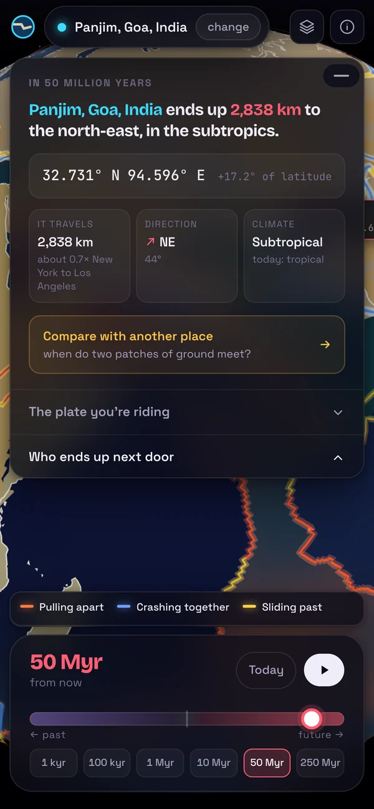
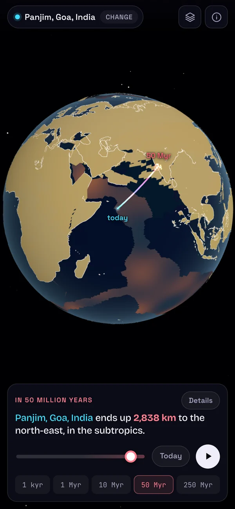
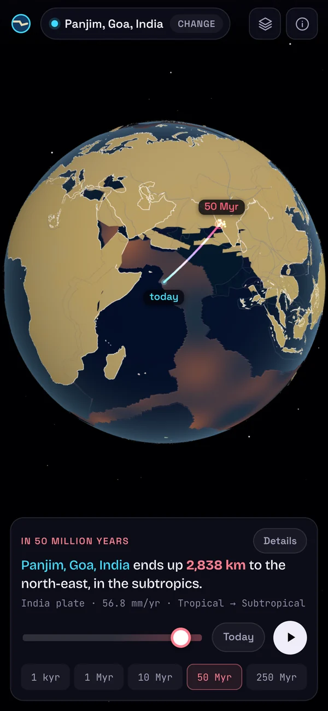

The same answer, four interfaces

19 Sep · first version
The picker and the readout sit on top of the globe. The coloured seams and the grid are on from the start.

20 Sep · rebuild 1
Pick, then explore. But the answer sheet still covers about two thirds of the screen.

20 Sep · rebuild 2
The globe is clear. The logo and the plate figures fell out with the panel.

20 Sep · now
A quiet line under the sentence: plate, speed, climate. The dock keeps one height.
Each screen is the version at that commit, run again and captured at the same place and time.